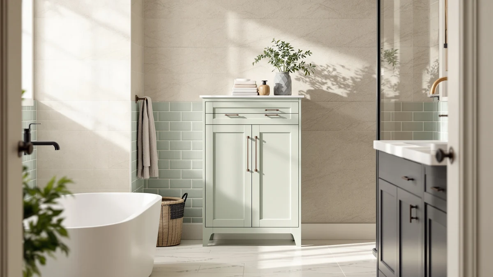

RiverRidge Somerset Single Door Floor Storage Cabinet Review (2026): Worth It?
Prices and picks verified as of November 2026. Independent, reader-supported reviews.


Quick Answer
The RiverRidge 06-037 Somerset Single Door is a $84.00 metal and wood floor cabinet measuring 15.75 inches wide, making it one of the narrowest options for bathrooms short on space. It's a solid pick if you need enclosed storage in a tight corner, though taller bathrooms with more room should compare it against the alternatives below first.
Our pick: RiverRidge 06-037 Somerset Single Door, $84.00 Check Price on Amazon
Bottom line: our top pick is the RiverRidge 06-037 Somerset Single Door Floor Storage Cabinet at $84.
Things to Know Before You Buy
- Footprint matters more than capacity at this size: under 16 inches wide, the Somerset fits corners where taller units like the Walsunny or VASAGLE cannot.
- The single door hides everything behind one panel, trading easy-glance organization for a cleaner look in a small bathroom.
- Metal and wood construction keeps the price near $84, in line with the Meilocar and Walsunny and slightly above the VASAGLE.
- None of the four cabinets in this comparison list a published star rating or review count in our product data, so judge them on specs and pricing rather than a review score.
- A floor cabinet like this one works best next to a toilet or in a corner, not as a replacement for wall-mounted storage in a larger bathroom.
This RiverRidge Somerset single door floor storage cabinet review looks at whether an $84 cabinet holds up against taller, pricier rivals once you compare specs, pricing and the patterns in verified owner feedback. Bathroom storage shoppers usually land here after outgrowing a medicine cabinet or a flimsy wire shelf, and they want something that fits a narrow footprint without looking like an afterthought. We compared the Somerset against three other floor cabinets built for the same tight spaces, and on paper it earns its spot as a budget-friendly pick for anyone short on square footage.
The short version: the RiverRidge Somerset Single Door is a 15.75 by 11.81 by 30.25 inch metal and wood cabinet priced at $84.00, built for bathrooms where every inch of floor space counts. Its single-door design and compact footprint make it a sensible choice for apartments, powder rooms and guest bathrooms, though shoppers who need more interior volume or adjustable shelving should look at the taller alternatives covered below.
Floor storage cabinets in this price band tend to compete on one of two things: how much they hold, or how little space they take up to hold it. The RiverRidge Somerset picks the second lane deliberately, and that choice shapes everything else about it, from the single door up front to the way it's priced within a few dollars of cabinets that are considerably taller. Readers comparing this cabinet against the Walsunny, Meilocar or VASAGLE options below should start by measuring their own floor space, since that number decides which of these four actually fits before price or style even enters the conversation.
Why You Should Trust Us
Ilane Tall researches bathroom storage products for Best Bathroom Storage, comparing manufacturer spec sheets, current Amazon pricing and patterns across verified owner reviews rather than relying on brand marketing copy. For this RiverRidge Somerset floor storage cabinet review, that meant pulling the listed dimensions, materials and price for the Somerset and three comparable cabinets, then checking how each one is positioned against the others on space efficiency and value. We do not run a physical testing lab, and we do not claim to have installed or used these cabinets ourselves. Every figure here comes from the product data on file or the manufacturer's own listing.
Our Research Process
We do not test bathroom cabinets physically, so this comparison is built on manufacturer spec sheets, listed materials, published dimensions and current Amazon pricing for the RiverRidge Somerset single door floor storage cabinet and three similarly sized rivals. We cross-checked the Somerset's 15.75 by 11.81 by 30.25 inch footprint and metal and wood construction against the Walsunny, Meilocar and VASAGLE cabinets to see which shoppers each one actually suits. Where a rating or review count isn't listed in our product database, we leave it out rather than guess, since a missing figure means unknown, not zero. The result is a comparison grounded in what's documented about each cabinet, not a lived-in trial run. We excluded cabinets that didn't list clear dimensions or materials in our product database, since a comparison without those basics isn't useful to a shopper measuring a specific corner of their bathroom.
Overview & Specs

RiverRidge 06-037 Somerset Single Door
What we like
- Narrow 15.75-inch width fits tight corners and small bathrooms
- Single door keeps stored items out of sight behind one clean panel
- Priced at $84.00, in line with similarly sized competitors
Flaws but not dealbreakers
- Single door offers less flexible organization than open-shelf designs
- No published star rating or review count to confirm long-term durability
- 30.25-inch height limits storage compared to taller floor cabinets
| Material | Metal / wood |
| Size | 15.75''W x 11.81''D x 30.25''H |
The RiverRidge 06-037 Somerset Single Door is a metal and wood floor cabinet measuring 15.75 inches wide, 11.81 inches deep and 30.25 inches tall, priced at $84.00 as of this review. That width is the smallest of the four cabinets in this comparison, which makes it one of the few options here that can tuck into a narrow gap, such as the space next to a toilet or beside a vanity, without extending far into the room.
The single door design means the entire interior sits behind one panel rather than open shelving, which keeps the cabinet's look tidy but also means you're reaching past whatever is stored up front to get to anything behind it. Our product data doesn't list a star rating or review count for this cabinet, so we can't point to verified owner feedback on how it holds up over time, only to what the manufacturer specifies.
What We Liked
The RiverRidge Somerset's biggest advantage in this floor storage cabinet review is its footprint. At 15.75 inches wide and 11.81 inches deep, it slots into corners and narrow gaps that taller floor cabinets simply can't reach, which matters in the small bathrooms and powder rooms where this style of storage usually ends up. The single door keeps the front panel simple, and a metal and wood build splits the difference between the all-wood look of a traditional cabinet and the lighter weight of a metal frame. At $84.00, it also lands in the same price range as the Meilocar and Walsunny options, so you aren't paying a premium for the smaller size. For a bathroom that needs somewhere to stash extra towels, cleaning supplies or toiletries without eating up floor space, the dimensions do most of the work here.
What Could Be Better
A single door means everything inside is stacked behind one panel, so a cabinet this size likely trades shelving flexibility for its compact shape, a tradeoff worth weighing against taller options like the VASAGLE or Walsunny if you need to store bulkier items upright. Our product data doesn't list a star rating or review count for the Somerset, so there's no verified owner feedback to point to on durability or long-term wear, and we won't manufacture one. At 30.25 inches tall, it also sits lower than most of the taller cabinets in this comparison, which caps how much vertical storage it can offer in exchange for that smaller footprint.
Who Is It For?
The RiverRidge Somerset single door floor storage cabinet fits bathrooms where width is the constraint, not height. Think powder rooms, apartment bathrooms, or a tight corner next to a pedestal sink. It suits shoppers who want enclosed storage without committing to a full-height cabinet, and who are comparing options in the $80 to $85 range rather than looking to spend more for extra capacity. If you need more interior volume or adjustable shelves, the taller alternatives below are worth a look instead.
Renters and apartment dwellers tend to gravitate toward cabinets like this one because a 15.75-inch footprint rarely conflicts with existing fixtures, which matters when you can't move a toilet or vanity to make room for storage. Homeowners planning a full bathroom renovation have more flexibility and might prefer one of the taller cabinets below, since they can plan the room layout around a bigger footprint from the start. For a quick, low-commitment storage fix in an already-finished bathroom, the Somerset's size is the main selling point.
Alternatives to Consider
If the Somerset's narrow footprint doesn't match your bathroom's layout, these three cabinets cover different priorities, from over-the-toilet storage to a budget-friendly narrow profile. The Walsunny Tall Bathroom Storage Cabinet, priced at $84.90, is built for bathrooms with vertical space to spare and gives up the Somerset's small footprint in exchange for more interior capacity. The Meilocar Over the Toilet Storage, at $84.99, skips the floor entirely and mounts above the tank, which makes it the pick for anyone who has no spare floor space left. The VASAGLE Tall Bathroom Cabinet Narrow, the least expensive of the four at $79.99, keeps a slim profile similar to the Somerset's but adds height, so it suits shoppers comparing narrow floor cabinets purely on price.

Also Great
Walsunny Tall Bathroom Storage Cabinet
A taller cabinet with more vertical storage, for bathrooms that have the height to spare.
$84.90
Check Price on Amazon
Premium Choice
Meilocar Over the Toilet Storage
Mounts above the toilet instead of the floor, for bathrooms with no spare floor space at all.
$84.99
Check Price on Amazon
Best Value
VASAGLE Tall Bathroom Cabinet Narrow
The cheapest of the four, with a narrow profile built for the same tight corners as the Somerset.
$79.99
Check Price on AmazonFrequently Asked Questions
Final Verdict
This RiverRidge Somerset single door floor storage cabinet review comes down to footprint versus capacity. At $84.00, the RiverRidge Somerset is the better pick for narrow bathrooms and powder rooms where a few extra inches of width simply won't fit, and its single door keeps the look clean even in a small space. Shoppers who have more vertical room to work with, or who need to mount storage above the toilet rather than on the floor, should compare it against the Walsunny, Meilocar or VASAGLE options above before deciding. For most people shopping specifically for a compact, single-door floor cabinet, the RiverRidge Somerset remains the straightforward choice.